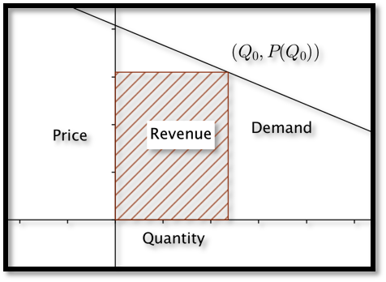
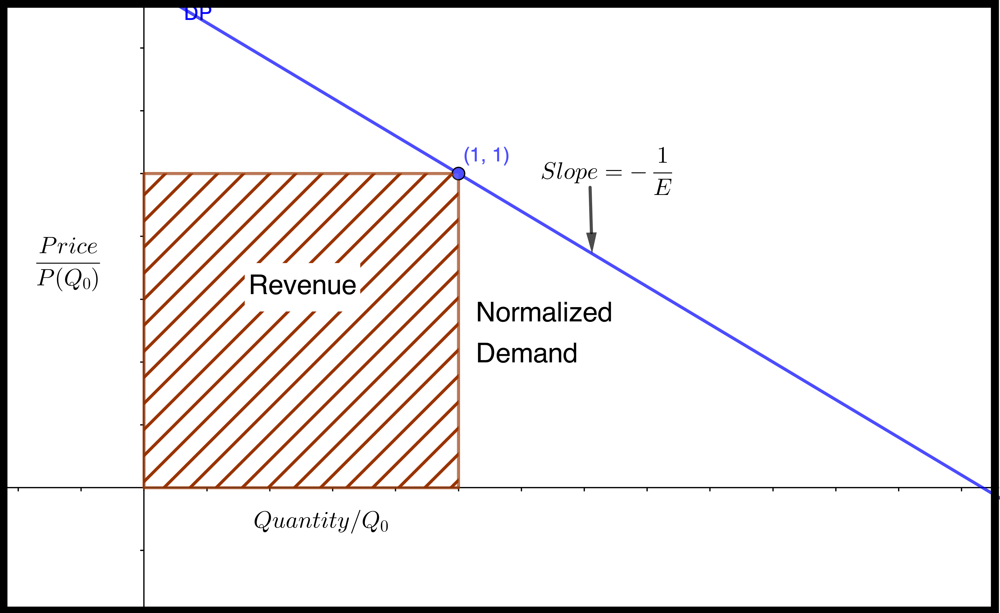
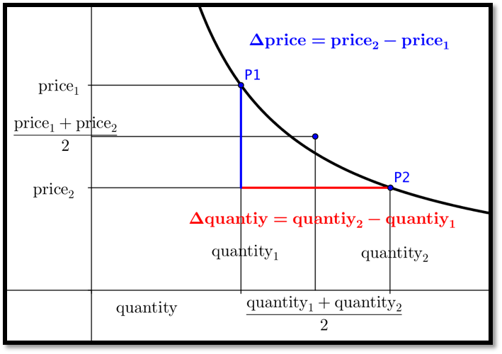

Rather than looking at the derivative of quantity with respect to price, or the rate of change with respect to price, we want to look at the relative rate of change with respect to price, or the Elasticity of Demand.
Section 5.3 Elasticity
Elasticity of demand is a concept from economics that looks at relative rate of change rather than rate of change. We want to look at how we express this as a variant of the derivative.
The law of demand states we increase demand by lowering price and lower demand by raising price. The naive rate of change in that case would be the change in quantity with respect to price. However that rate of change is not particularly useful. If I am told that I can sell 100 more units if I lower the price by $1 a unit, I don’t know if I should lower the price. I would definitely want to lower the price if I sell cars for an average price of $20,000 and typically sell 200 cars a year. I would not want to lower the price if I sell gasoline at $4.00 a gallon and sell 5,000,000 gallons a year.
If a small change in price causes a big change in demand, the demand is elastic. In that case, I generally want to lower the price and get a lot more customers. If I need to make a big change in price to get a small change in demand, the demand is inelastic. With inelastic demand I can raise revenue by raising price. Thus, elasticity of demand gives us a tool for maximizing revenue. We can look at this issue is either the discrete case (arc elasticity) or the continuous case (point elasticity).
Subsection 5.3.1 Point Elasticity
To understand elasticity we look at the simple case when the demand price function is linear. In that case, we can use geometry to understand the problem.

If \((Q_0,P(Q_0 ))\) is a point for a given price \(P(Q_0)\) and quantity \(Q_0\text{,}\) then revenue is \(Q_0*P(Q_0)\text{,}\) the price times the quantity at that point, or the area of the rectangle above. We want to know if we should pick a different point on the demand curve to increase the area of the rectangle.
If the special case where the price and quantity are both 1, the revenue rectangle is a square and we can simply look at the slope of the demand function. In that case, when the demand curve is flatter than a slope of minus 1, increasing the quantity increases the area because quantity increases faster than price decreases. Similarly, when the demand curve is steeper than a slope of minus 1, increasing the quantity causes the price to decrease even faster, so the area of the rectangle decreases.

We note that the slope of the demand curve is almost always negative. We also note that we are reversing the normal roles, with price being the input and quantity the output. We will It is thus convenient to talk about the negative reciprocal of the slope of the normalized demand price curve.
We refer to that quantity as Elasticity of Demand.
\begin{equation*}
E=-\frac{d(\quantity/Q_0)}{d(\price/P(Q_0))}=-\frac{d\quantity/Q_0}{d\price/P(Q_0)}=-\frac{d\quantity}{d\price}*\frac{P(Q_0)}{Q_0}\text{.}
\end{equation*}
If the elasticity is greater than 1, a small relative change in the price goes with a large relative change in the quantity. We would expect high elasticity in products that can easily be substituted. The demand for gasoline at one gas station, when there are 2 other gas stations at the same intersection, would be highly elastic.
When demand is elastic \((E \gt 1)\text{,}\) we raise revenue by lowering price.
We would expect low elasticity in products that are essential for which there is no reasonable substitute. Wedding rings and lifesaving medicine would have highly inelastic demand.
When the demand is inelastic (\(E \lt 1\)), we increase revenue by increasing price.
A relatively large change in price will produce a relatively small change in demand. Revenue will be at a maximum when elasticity is 1. This condition is referred to as unit elasticity.
Note that we have usually described price as a function of quantity, and in the definition of elasticity we use the derivative obtained from making quantity a function of price. From related rates, we know that these derivatives are reciprocals of each other.
Example 5.3.1. Point elasticity.
The demand price function for widgets is given in terms of quantity (\(q\)).
\begin{equation*}
P(q)=20-q/100\text{.}
\end{equation*}
- Find the elasticity when \(q=800\text{.}\) Interpret what that means for the strategy to raise revenue.
- Compare to the situation when \(q=1500\text{.}\)
Solution.
-
The formula for elasticity is:\begin{equation*} E=\frac{-d Q}{d P}*\frac{P(Q_0 )}{Q_0} \text{.} \end{equation*}I need to compute \(P(Q_0 )\) and \(\frac{-d Q}{d P}\text{.}\) Substituting into the demand function,\begin{equation*} P(800)=20-800/100=20-8=12\text{.} \end{equation*}To find \(\frac{d Q}{d P}\text{,}\) I recall from related rates, that \(\frac{d Q}{d P}=1/\frac{d P}{d Q}\text{.}\)\begin{equation*} \frac{d Q}{d P}=1/\left(\frac{d P}{d Q}\right)=1/\left(\frac{-1}{100}\right)=-100\text{.} \end{equation*}Thus\begin{equation*} \Elasticity= \frac{-d Q}{d P}*\frac{P(Q_0 )}{Q_0}=-(-100)*\frac{12}{800}=1.5\text{.} \end{equation*}Since the demand is elastic when the quantity is 800, we should lower the price, causing a relatively large increase in quantity, to raise revenue.
-
When the quantity is 1500, the demand price is 5 and the derivative of quantity with respect to price is still \(-100\text{.}\)\begin{equation*} \Elasticity=\frac{-d\quantity}{d\price}*\frac{P(Q_0)}{Q_0} =-(-100)*\frac{5}{1500}=1/3\text{.} \end{equation*}Since the demand is inelastic when the quantity is 1500, we should raise the price, causing a relatively small decrease in quantity, to raise revenue.In this example, the revenue function is\begin{equation*} \revenue=\price*\quantity=20 q-q^2/100\text{.} \end{equation*}We recognize that this is a downward parabola with a maximum when \(q=1000\text{,}\) which is consistent with our results.
Subsection 5.3.2 Arc Elasticity
Point elasticity was developed for use with a continuous demand price function where we could take a derivative. Often, our demand price function is a set of discrete points, because our quantity has to be a whole number. We would like to adapt elasticity to that case.
For arc elasticity we have two quantity-price points \((\quantity_1,\price_1)\) and \((\quantity_2,\price_2)\text{.}\) We want to adapt our formula for elasticity to the discrete case. We can think of the derivative, \(\frac{d Q}{d P}\text{,}\) as the ratio of small changes in quantity and price. The best value for price and quantity is the average value from the two points.

Our formula is converted to:
\begin{align*}
E\amp =\frac{-\Delta \quantity}{\Delta \price}*\frac{\text{average price}}{\text{average quantity}}\\
\amp =-\frac{\quantity_2-\quantity_1}{\price_2-\price_1} *\frac{(\price_1+\price_2)/2}{(\quantity_1+\quantity_2)/2}\text{.}
\end{align*}
Arc Elasticity.
\begin{equation*}
E=-\frac{\quantity_2-\quantity_1}{\price_2-\price_1} *\frac{\price_1+\price_2}{\quantity_1+\quantity_2}\text{.}
\end{equation*}
Example 5.3.2. Elasticity from two points.
Two quantity-price points for gizmos are \((5000, 20)\) and \((5200, 18)\text{.}\) What is the arc elasticity between the two points? Which price produces higher revenue?
Solution.
The formula for arc elasticity is:
\begin{align*}
E\amp =-\frac{\quantity_2-\quantity_1}{\price_2-\price_1} *\frac{\price_1+\price_2}{\quantity_1+\quantity_2}\\
E\amp =-\frac{5200-5000}{18-20}*\frac{20+18}{5000+5200} =-\frac{200}{-2}*\frac{38}{10400}\approx.373
\end{align*}
The market for gizmos is inelastic, as a price drop of about 10% only increases the market by about 4%. To increase revenue, I should charge the higher price.
Checking my work by computing the revenue at the two points, the first point, with the higher price and lower quantity produces $100,000, while the second point, with a lower price and higher quantity produces $93,600 in revenue.
We can use elasticity to approximate change in revenue form a change in price.
Example 5.3.3. Elasticity in terms of per cent change.
The short-term elasticity for gadgets is 0.6. What is the percentage change in revenue if the price is raised by 5%?
Solution.
An alternate formula for elasticity is:
\begin{equation*}
E=-\frac{\% \text{change in quantity}}{\% \text{change in price}}\text{.}
\end{equation*}
Thus we see the % change in quantity is \(-(0.6)*5\%=-3\%\text{.}\) Thus the new price is 1.05 times the old price and the new quantity is 0.97 times the old quantity.
\begin{align*}
\text{NewRevenue}\amp =\text{NewPrice}*\text{NewQuantity}\\
\amp=(1.05*\text{OldPrice})*(0.97*\text{OldQuantity})\\
\amp =1.0185*\text{OldRevenue}
\end{align*}
Thus raising the price by 5% will raise revenue by 1.85%.
Reading Questions 5.3.3 Reading Check
1. Reading check, 5.3, Elasticity.
This question checks your reading comprehension of the material is section 5.3, Elasticity, of Business Calculus with Excel. Based on your reading, select all statements that are correct. There may be more than one correct answer. The statements may appear in what seems to be a random order.
- Arc elasticity is computed from two points.
- Elasticity of demand is a concept from economics that looks at relative rate of change rather than rate of change.
- When demand is inelastic (E is less than 1), we raise revenue by raising price.
- We say elasticity is low we cannot easily change the price without changing the demand.
- The formula for Point elasticity is \(\frac{-dQ}{dP}*\frac{P(Q_0)}{Q_0}\text{.}\)
- Elasticity of demand is the relative rate of change with respect to price.
- When demand is elastic (E is greater than 1), we raise revenue by lowering price.
- We say elasticity is high if we can easily change the price without changing the demand.
- None of the above
Exercises 5.3.4 Exercises: Elasticity Problems
Exercise Group.
For the given demand-price function and quantity:
- Find the price associated with the given quantity.
- Find the elasticity for the given quantity.
- State which pricing strategy, raising, lowering, or holding steady on prices, increases revenue.
- Find the price and quantity that maximizes profit.
1.
\(\price=30-\frac{\quantity}{50};\quad \quantity=300\text{.}\)
Solution.
- \(\displaystyle \price=30-\frac{300}{50}=30-6=24\)
- \(\displaystyle E=\frac{-d Q}{d P}*\frac{P(Q_0 )}{Q_0} = \frac{-1}{dP/dQ} \frac{P(Q_0 )}{Q_0} = \frac{-1}{-1/50} \frac{24}{300}=\frac{50*24}{300}=4\)
- \(E \gt 1\) so demand is elastic, which means we raise revenue by lowering prices.
-
We can maximize revenue by finding the price and quantity when \(E = 1\) (unit elastic). We want\begin{align*} 1\amp =E=\frac{-1}{dP/dQ}\frac{P(q)}{q}\\ 1\amp =50 \frac{30-q/50}{q}=\frac{1500-q}{q} \end{align*}First solve for \(q\text{:}\)\begin{equation*} q=1500-q \Longrightarrow 2q=1500 \Longrightarrow q=750 \text{.} \end{equation*}Next find the price:\begin{equation*} \price=30-\frac{\quantity}{50},\qquad \price(750)=30-\frac{750}{50}=30-15=15\text{.} \end{equation*}Hence we have a maximum revenue when \(\quantity=750\) and \(\price=\$15\text{.}\) (The actual maximum revenue is \(\revenue=\quantity*price=750*15=\$11,250\text{.}\))
2.
\(\price=40-\frac{\quantity}{75};\quad \quantity=1600.\)
3.
\(\price=50-\frac{\quantity}{100};\quad \quantity=2500.\)
Solution.
- \(\displaystyle price=50-\frac{q}{100}=50-\frac{2500}{100}=50-25=\$25\)
- \(\displaystyle E=\frac{-d Q}{d P}*\frac{P(Q_0 )}{Q_0} = \frac{-1}{dP/dQ} \frac{P(Q_0 )}{Q_0} = \frac{-1}{-1/100} \frac{25}{2500}=\frac{2500}{2500}=1\)
- When \(E = 1\) we have unit elasticity and the revenue is at a maximum. Hence we want to leave the price as is.
- The maximum revenue occurs when \(E = 1\text{,}\) so we want \(q = 2500\) and \(P = \$25\text{.}\)
4.
\(\price=30*(0.9)^{\frac{\quantity}{100} };\quad \quantity=400.\)
5.
\(\price=20*(0.95)^{\frac{\quantity}{50} };\quad \quantity=800.\)
Solution.
- \(\displaystyle \price=20*(.95)^{(800/50)}=\$8.80\)
- \begin{align*} E\amp=\frac{-d Q}{d P}*\frac{P(Q_0 )}{Q_0}= \frac{-1}{dP/dQ} \frac{P(Q_0 )}{Q_0} \\ \frac{dP}{dQ}\amp = 20*(.95)^{quantity/50}\ln(.95)*\frac{1}{50}\\ \left.\frac{dP}{dQ}\right|_{95}\amp = 20*(.95)^{800/50}\ln(.95)*\frac{1}{50}=-0.009\\ E\amp =\frac{-1}{dP/dQ} \frac{P(Q_0 )}{Q_0}=\frac{-1}{-0.009} \frac{8.80}{800}=1.22 \end{align*}
- \(E \gt 1\text{,}\) so we raise revenue by lowering the price.
-
We can maximize revenue by finding the price and quantity when \(E = 1\) (unit elastic). We want\begin{align*} 1\amp =E=\frac{-1}{dP/dQ}\frac{P(q)}{q}\\ 1\amp =-\frac{1}{20*(.95)^{q/50}\ln(0.95)\frac{1}{50}}\frac{20*(.95)^{q/50}}{q}=-\frac{50}{q ln(0.95)} \end{align*}And hence \(\ln(.95) q= -50\text{,}\) so \(q= -50/\ln(.95)\approx 975\text{.}\) When \(q=975\text{,}\) we have that \(price=20*(.95)^{(975/50) }=\$7.36\text{.}\)
6.
\(\price=40*(0.8)^{\frac{\quantity}{50} };\quad \quantity=300.\)
Exercise Group.
For the given demand-quantity points:
- Find the elasticity for the given pair of points.
- State which price-point, increases revenue.
7.
First price-quantity point = ($50,1000) Second price-quantity point = ($51,900).
Solution.
- \begin{align*} E\amp =-\frac{(q_2-q_1 )}{(p_2-p_1 )}*\frac{(p_1+p_2 )}{(q_1+q_2 )}\\ \amp =-\frac{(900-1000)}{(51-50)}*\frac{(50+51)}{(1000+900)}=\frac{10100}{1900}=5.32 \end{align*}
- \(E\gt 1\text{,}\) So the market is elastic and we should choose the lower price. \((\$50, 1000)\)
8.
First price-quantity point = ($5.00,387) Second price-quantity point = ($4.95,410).
9.
First price-quantity point = ($1.99,2500) Second price-quantity point = ($2.01,2385).
Solution.
- \begin{align*} E\amp =-\frac{(q_2-q_1 )}{(p_2-p_1 )}*\frac{(p_1+p_2 )}{(q_1+q_2 )}\\ \amp =-\frac{(2500-2385)}{(1.99-2.01)}*\frac{(1.99+2.01)}{(2500+2385)}=\frac{460}{57.7} \end{align*}
- \(E\gt 1\text{,}\) So the market is elastic and we should choose the lower price. \((\$1.99, 2500)\)
10.
First price-quantity point = ($783,455) Second price-quantity point = ($792,442).
11.
List 3 items where you would expect the demand price to be elastic and 3 items where you would expect the demand price to be inelastic. Explain why you have put each item into its category.
Solution.
Hint:
Elastic (\(E \gt 1\)) The book mentions an elastic market points to something that can be easily substituted and where revenue goes up when prices go down. Examples are a particular cut of meat and for instance a brand of clothes. If there is a sale we would choose the cheaper item. What else falls into this category?
Inelastic (\(E \lt 1\)) This is something where an increase in price would not decrease revenue. One situation would be items that are not easily substituted. For example wedding rings or life saving medication. What else falls into this category?
12.
Give reasons why a vendor might set a price that does not maximize revenues.
13.
If the short-term elasticity for widgets is 2.5 and the price is raised by 10%, find the percent change in quantity and revenue.
Solution.
\begin{equation*}
E=-\frac{\text{percent change in quantity}}{\text{percent change in price}}
\end{equation*}
So we have \(2.5=\frac{-\text{percent change in quantity}}{10 \text{ percent}}\text{,}\) and thus \(\text{change in quantity}=-25\%\text{.}\)
And \(\text{new revenue}=(1.10\text{ old price})(0.75\text{ old quantity})=.8250\text{ old price}\text{.}\)
Hence we have a \(-17.5\%\) change in revenue.
14.
If the short-term elasticity for thingamabobs is 0.8 and the price is raised by 10%, find the percent change in quantity and revenue.